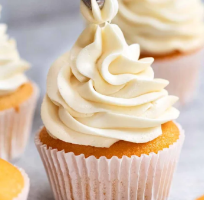
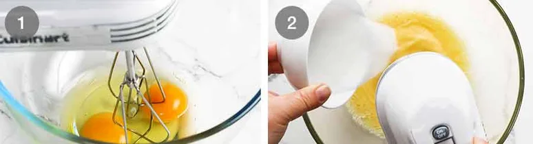
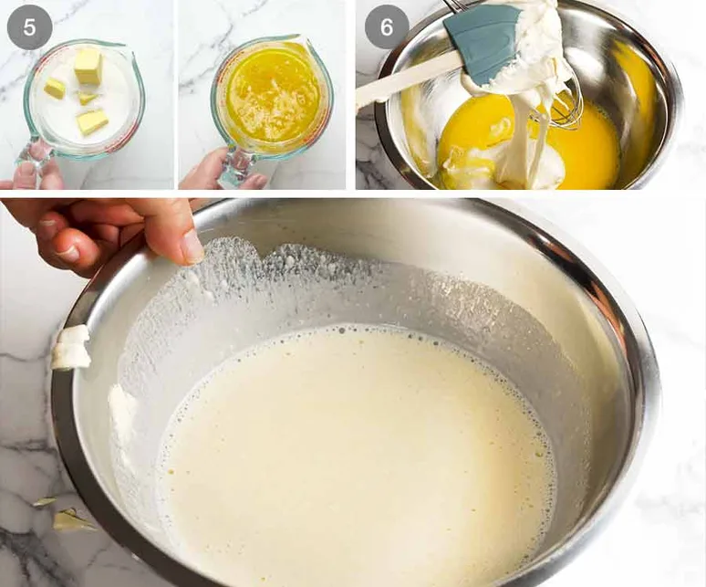

Cupcake Frosting Swirls are light, creamy toppings piped beautifully onto soft cupcakes. They look simple and elegant at first - then delight you with a burst of sweetness and smooth vanilla flavour in every bite! Easy to make and even easier to enjoy, frosting is the final touch that turns a simple cupcake into a perfect treat.
Vanilla frosting has a sweet, creamy, and smooth taste. The vanilla flavor is light and pleasant, giving a classic and comforting feeling similar to vanilla ice cream or sweet cream. It is not overpowering, which makes it easy to enjoy. Vanilla buttercream frosting has a richer flavor because of the butter, creating a soft, melt-in-the-mouth texture. It is nicely balanced in sweetness and works well with many desserts like cakes and cupcakes.
Plain flour gives a soft, velvety crumb and better vanilla and butter flavour than cake flour. Eggs (room temperature) whip better and make the cupcakes light and fluffy without an eggy taste.Baking powder helps the cupcakes rise evenly and gives extra lift.Full-fat milk adds moisture and improves the rise.Sugar caster sugar dissolves best, but regular sugar also works.Oil a small amount adds extra moisture without making the cupcakes heavy. Vanilla extract good-quality vanilla gives the best and most authentic flavour.
Use a handheld beater instead of a stand mixer - for small batch batters like this, it comes together better using a handheld beater you can move around the bowl rather than a large stand mixer bowl. If using a stand mixer, you'll need to scrape down the sides and base well to ensure the batter comes together evenly.
Whip the eggs and sugar - Beat the eggs with sugar for a whole 7 minutes until thick and glossy, it changes from yellow to white, and tripled in volume (just over double depth in the bowl).The aeration created during this step is key for a soft, fluffy crumb.
Whisk together the flour, baking powder and salt
Gradually add the flour mixture into the egg mixture in 3 lots, mixing for just 5 seconds on Speed 1 in between. This should make the flour just incorporated - don't worry if there are some streaks on the bowl not mixed in. Key here is minimum mixing!

Melt butter and heat milk use a microwave or stove to heat milk with the butter until it melts. HOT milk helps with rise for these cupcakes - I was dubious so I tried the Vanilla Cake with cooled melted butter in milk and found it did not rise as well.
Mix some batter into hot milk (tempering) this serves two purposes: a) bring down the temperature of the hot milk so it won't “cook” the eggs (ie. tempering); and b) it lightens up the density of the hot milk (see above - it becomes foamy) so it blends together faster when added to the rest of the whipped egg mixture.
Slowly pour milk mixture back into whipped eggs over 15 seconds while beating on the lowest speed. Scrape down sides of bowl, then mix for 10 seconds the batter should now be smooth.
Fill cupcake liners with batter I find the easiest way to do this is with an ice cream scoop with a lever. The standard size is 1/4 cup which is actually the perfect quantity for cupcakes!